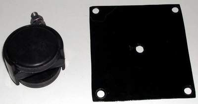
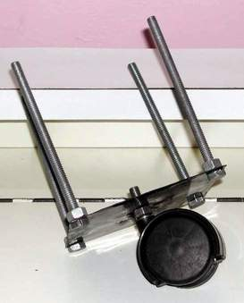
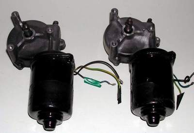
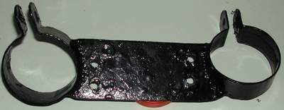
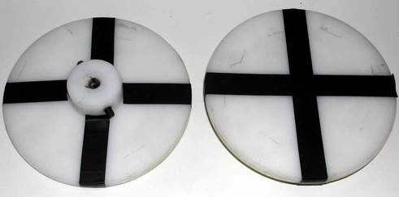
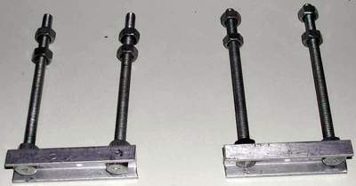
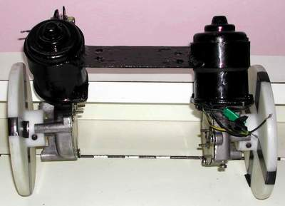
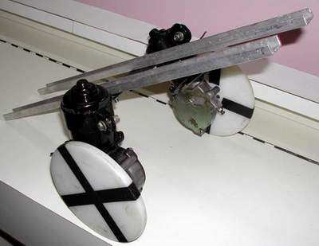
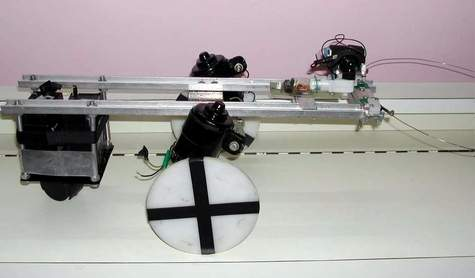

Design goals
- Simple construction
- Compact and lightweight
- Cost-effective
- Easy to reconfigure
- Motors with high torque
- Space to add more sensors
- Enough mounting area for electronics
Main body structure
The robot is built around a sturdy aluminium frame. The primary components are:
- Aluminium chassis
- Cast-steel motor clamps
- High-torque motors
- Custom-machined nylon wheels
- Battery bay
- Sensor bay
- Mounting points for circuit boards
- A dedicated mount for a surveillance camera
Frame
The frame turned out to be the trickiest part of the entire build. It’s made from two long aluminium bars—the same type used for sliding windows and doors. Holes were drilled along them to mount the motors, sensors, and electronics.
The two aluminium rods are each 75 cm long, placed 5 cm apart, and connected through the motor clamp. The frame is divided into three functional sections:
- Front: camera head and obstacle sensors
- Middle: motor clamps and circuit board stack
- Rear: battery bay and support wheel
Battery bay
The robot uses two 6V, 4.5Ah sealed lead-acid batteries. Since they sit at the rear of the frame, a universal support wheel was added to reduce friction and prevent the tail from dragging. The support wheel was sourced from a refrigerator spare-parts shop.

The battery tray is a simple rectangular metal plate with holes drilled for bolts and the support wheel.

(Battery Bay)
Motor & clamp
FIRE runs on two INRAD 12V tri-speed wiper motors—one for each wheel. They offer speeds of 25, 35, and 45 rpm, and were purchased from a local automobile market.
The motor must have enough torque to carry the weight of the robot and any payload, if necessary. I measured the torque to be about 60 kg·cm. In this robot, the motors are operated at 25 rpm to reduce the current drawn. The peak current drawn is 4 A under full load.
Torque = Force × perpendicular distance
To estimate the torque, we attached a 10 cm steel rod to the motor shaft. We then added weights at the end of the rod until the motor could no longer complete continuous 360-degree rotations. At that point, the motor was unable to lift a load of about 6 kg.
Torque = 6 × 10 kg·cm = 60 kg·cm
After the robot was assembled it could lift about 7 kg. I ran out of extra weights to test with. My guess is that it can easily carry another 5 kg. The robot itself weighs 6 kg and, in addition to that, I estimate it can carry an additional 13 kg.

(INRAD 12 V, tri-speed wiper motors)
One challenge was that when mounted vertically, the two motor bodies don’t sit in the same plane, causing a slight imbalance. To compensate, a custom clamp with a tilt in the holding area was designed. It works well enough, though a cleaner solution would be to replace the internal gears with custom ones.

(Motor clamp resting on a small reddish-brown box. The clamps are at an angle to each other, not visible in this image)
Wheels
My initial idea for the wheels was to use chain sprockets from motor bikes. However, they were too heavy and the teeth were dangerous. I decided instead to make custom nylon wheels for the robot. These turned out to be the most expensive part of the build. I spent Rs. 600 for 2.5 kg of nylon cylinder stock and then took it to a lathe to machine the wheels to the required dimensions.
The diameter of each wheel is 150 mm and the width is 10 mm. The wheel includes a provision to attach the motor shaft using Allen screws. The diameter of the wheel plays a major role in determining the speed of the robot.

(Nylon wheels)
To achieve a speed of 20 cm/min, the wheel radius was calculated based on the motor’s rotational speed. The motor runs at 25 rpm, so substituting into the linear velocity formula:
Linear velocity = angular velocity × circumference
20 = 25 × 2 × π × R
Solving for R, R = 20 / (25 × 2 × π)
This gives a wheel radius of approximately 7.5 cm.
Circuit board mounts
The circuit boards are stacked one above the other in the middle part of the robot using long 8" bolts.
Surveillance camera mount
The camera head is mounted on the front part of the robot on the aluminium frame, giving it a full view of the surroundings.
IR sensor bay
The IR sensors are mounted on small aluminium brackets at the front part of the frame. The bolts allow the sensors to maintain a low clearance so they can easily detect edges.

Images

(Motor + wheel + clamp)

(Frame + motor + wheel + clamp)

(The frame with motors, battery bay and camera head mounted.)